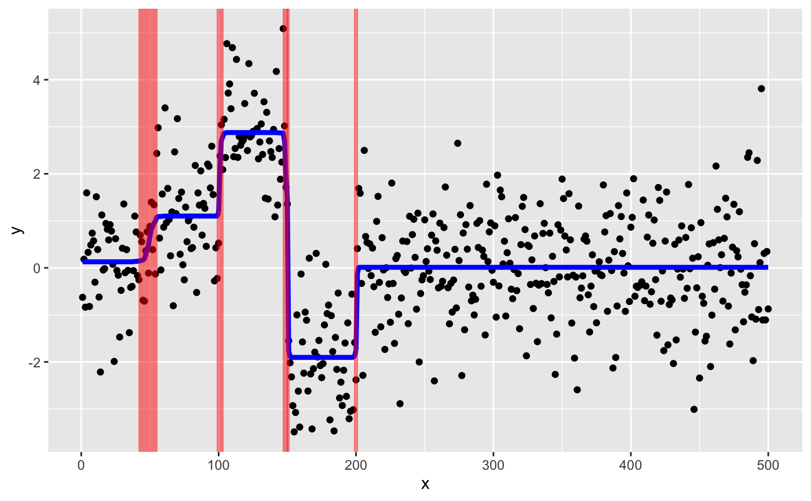

R/susie_plot_changepoint.R
susie_plot_changepoint.RdPlots original data, y, overlaid with line showing susie fitted value and shaded rectangles showing credible sets for changepoint locations.
susie_plot_changepoint(
s,
y,
line_col = "blue",
line_size = 1.5,
cs_col = "red"
)A susie fit generated by
susie_trendfilter(y,order = 0).
An n-vector of observations that are ordered in time or space (assumed equally-spaced).
Color for the line showing fitted values.
Size of the lines showing fitted values
Color of the shaded rectangles showing credible sets.
A ggplot2 plot object.
set.seed(1)
mu = c(rep(0,50),rep(1,50),rep(3,50),rep(-2,50),rep(0,300))
y = mu + rnorm(500)
# Here we use a less sensitive tolerance so that the example takes
# less time; in practice you will likely want to use a more stringent
# setting such as tol = 0.001.
s = susie_trendfilter(y,tol = 0.1)
# Produces ggplot with credible sets for changepoints.
susie_plot_changepoint(s,y)
